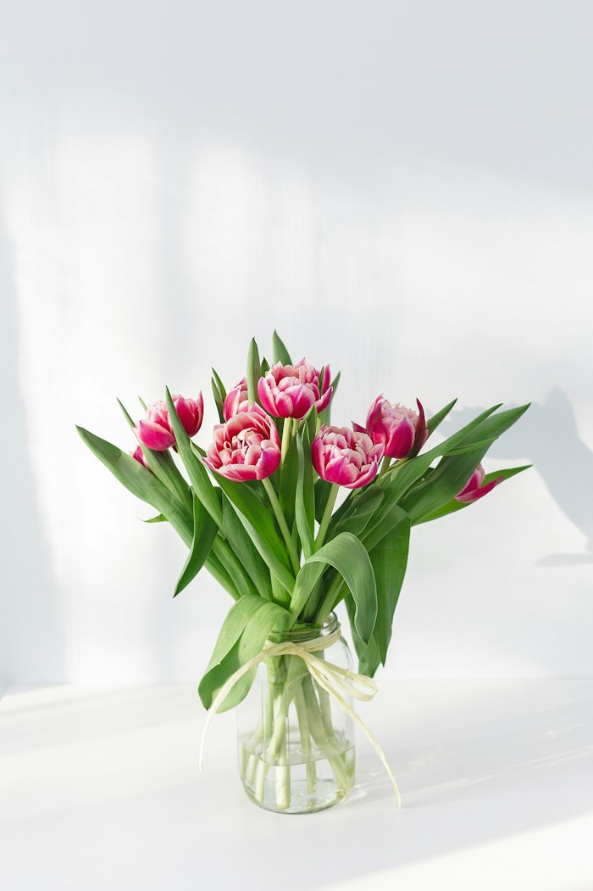
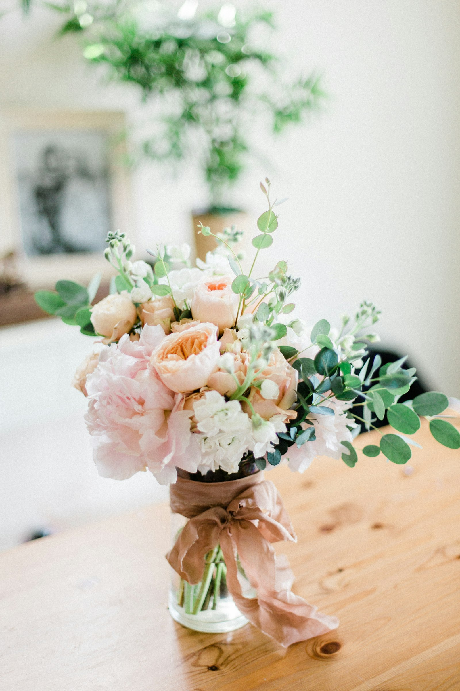
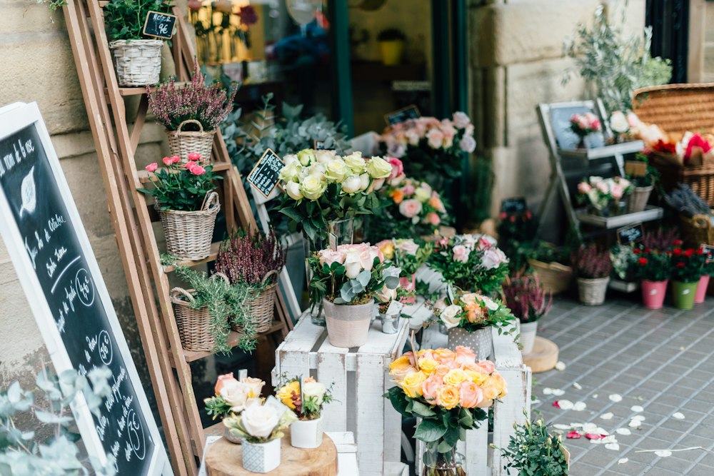
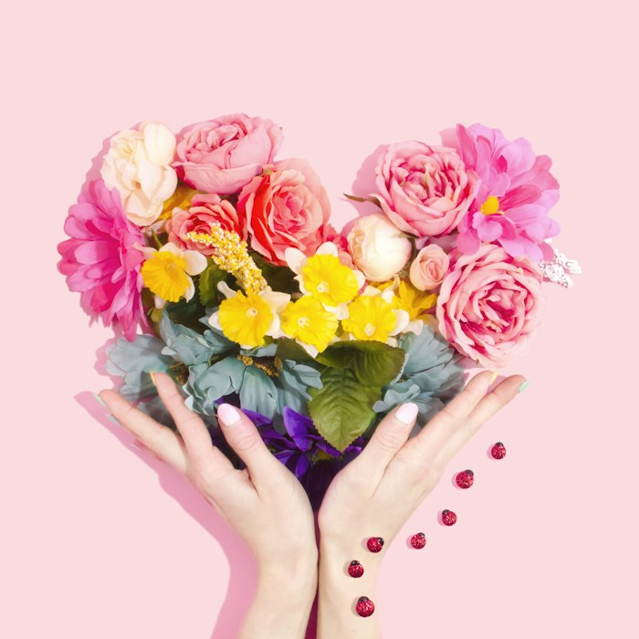
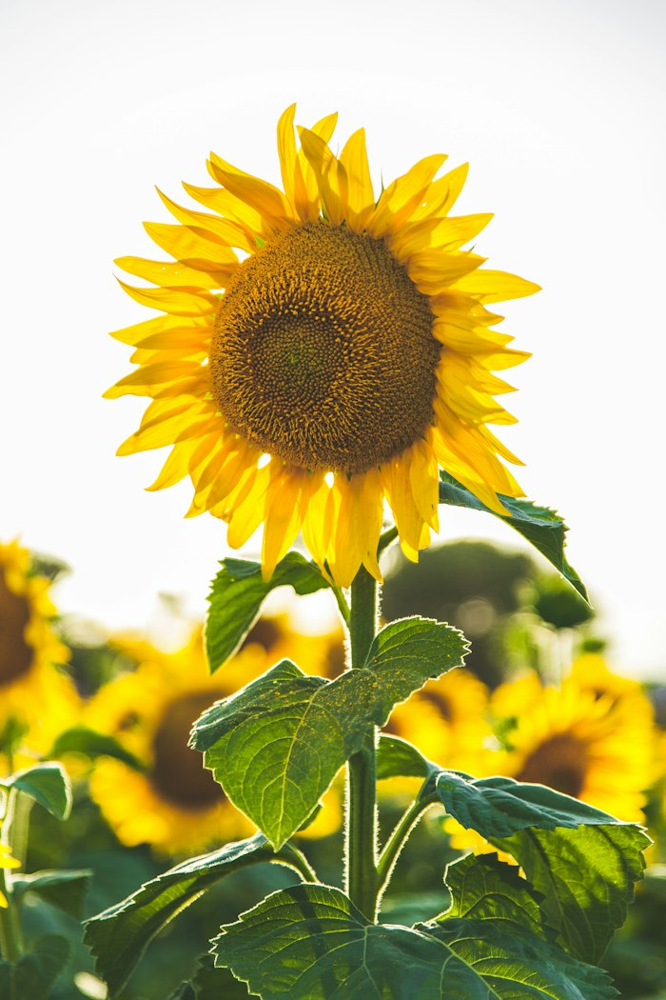
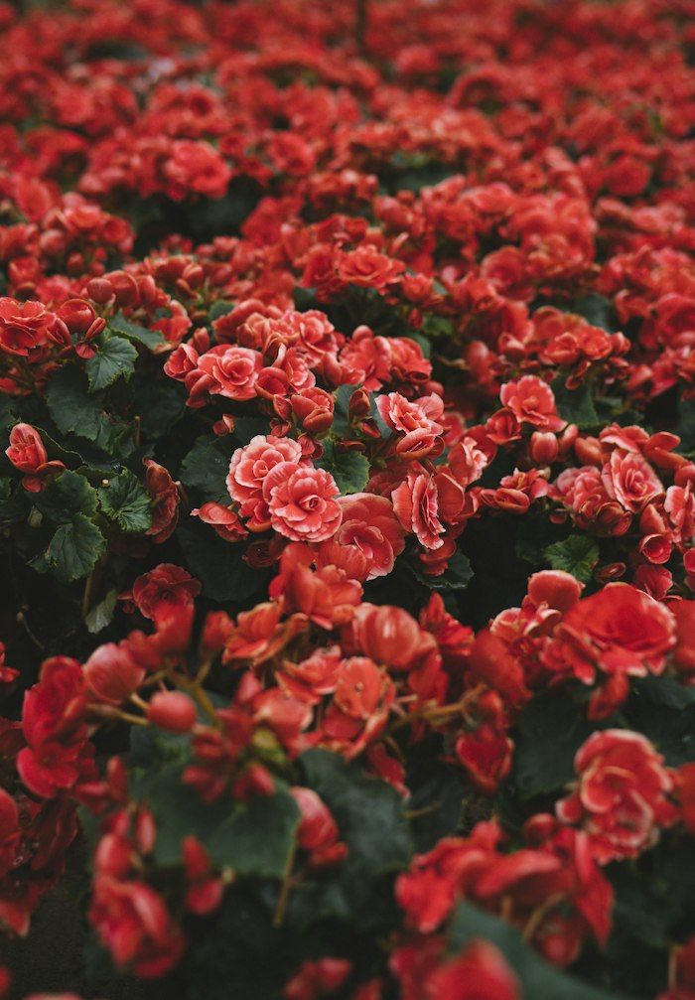

Tulipanes rosa
Doce tulipanes en frasco de vidrio con liston natural.
$650 MXNFlorería artesanal
Arreglos hechos a mano con flores de temporada, cultivadas por productores locales y entregadas con cariño a tu puerta.
Ver arreglos

Nuestra historia
Bloom & Root nacio en un pequeño taller con una idea sencilla: que cada ramo refleje la estacion en la que fue creado. Elegimos cada tallo por su forma, su aroma y su color.
Trabajamos con productores cercanos, evitamos el plástico en nuestros empaques y diseñamos cada arreglo de forma unica, para que ningún regalo se parezca a otro.
Los favoritos

Doce tulipanes en frasco de vidrio con liston natural.
$650 MXN
Rosas, peonias y fresias en tonos pastel.
$890 MXN
Un ramo luminoso para alegrar cualquier espacio.
$520 MXN
Planta de interior con maceta de barro artesanal.
$380 MXN